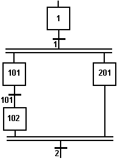

SFC programs are executed sequentially within a target cycle, according to the order defined when entering programs in the hierarchy tree. A parent SFC program is executed before its children. This implies that when a parent starts or stops a child, the corresponding actions in the child program are performed during the same cycle.
Within a chart, all valid transitions are evaluated first, and then actions of active steps are performed. The chart is evaluated from the left to the right and from the top to the bottom.

Execution order:
„ Evaluate transitions:
1, 101, 2
„ Manage steps:
1, 101, 201, 102
In case of a divergence, all conditions are considered as exclusive, according to a left to right priority order. It means that a transition is considered as FALSE if at least one of the transitions connected to the same divergence on its left side is TRUE.
The initial steps define the initial status of the program when it is started. All top level (main) programs are started when the application starts. Child programs are explicitly started from action blocks within the parent programs.
The evaluation of transitions leads to changes of active steps, according to the following rules:
„ A transition is crossed if:
• its condition is TRUE.
• and if all steps linked to the top of the transition (before) are active.
„ When a transition is crossed:
• all steps linked to the top of the transition (before) are de-activated.
• all steps linked to the bottom of the transition (after) are activated.
Execution of SFC within the T5 target is sampled according to the target cycles. When a transition is crossed within a cycle, the following steps are activated, and the evaluation of the chart will continue on the next cycle. If several consecutive transitions are TRUE within a branch, only one of them is crossed within one target cycle.
This section describes the execution model of a standard T5 target. SFC execution rules may differ for other target systems. Please refer to OEM instructions for further details about SFC execution at run time.
Some run-time systems may not support exclusivity of the transitions within a divergence. Please refer to OEM instructions for further information about SFC support.